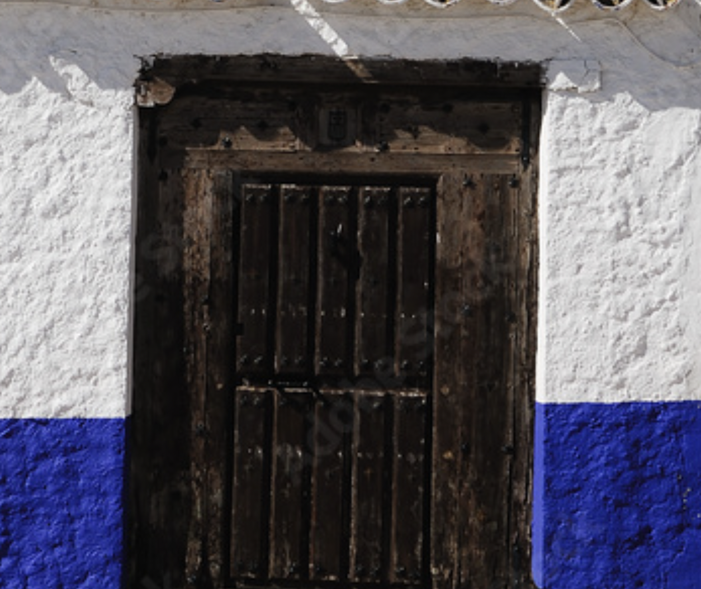

<div class="sidebar" id="sidebar">
    <a href="javascript:void(0)" id="close_sidebar_btn" onclick="closeNav()"
   style="text-align:center;font-size:30px;padding:0px;"></a>
    <a class="active" href="../nlp_course.html" style=" align-items: center; font-weight: bold;">
    
        RAG en   <font color="#C43116" id="for_you_in_sidebar">español</font></a>


    <div class="dropdown-scope">
          <a href="motivación.html">Motivación</a>
          <a href="recopilacion_de_datos.html" >Recopilación de datos</a>
          <a class="dropdown-btn" style="font-weight: bold;">Corpus para La Solana
            <i class="fa fa-caret-down"></i>
          </a>
          <div class="dropdown-container">
            <a href="#tabla"><span style="margin-right:15px;font-size:14px;">&#8226;</span>Descripción general del corpus para La Solana</a>
              <a href="#gaceta_de_lasolana"><span style="margin-right:15px;font-size:14px;">&#8226;</span>Gaceta de La Solana</a>
              <a href="#wikipedia"><span style="margin-right:15px;font-size:14px;">&#8226;</span>Wikipedia</a>
              <a href="#lasolananews"><span style="margin-right:15px;font-size:14px;">&#8226;</span>La Solana Noticias</a>
              <a href="#blogspot"><span style="margin-right:15px;font-size:14px;">&#8226;</span>Blog Joaquín Costa. La Solana. Legado Bustillo.</a>
              <a href="#libro"><span style="margin-right:15px;font-size:14px;">&#8226;</span>Libro El legado Bustillo de La Solana</a>
              <a href="#fundación"><span style="margin-right:15px;font-size:14px;">&#8226;</span>Fundación Histórico-Cultural Paulino Sánchez Delgado</a>
              <a href="#miscelanea"><span style="margin-right:15px;font-size:14px;">&#8226;</span>Miscelánea</a>
          </div>
          <a href="#coming_soon_main_course"><span style="margin-right:15px;font-size:14px;">&#8226;</span>
                     <font color="#888"> Próximos capítulos</font></a>

          </div>

    </div>


<flowise-fullchatbot></flowise-fullchatbot>
<body style="margin:30px">
<script type="module">
    import Chatbot from "https://cdn.jsdelivr.net/npm/flowise-embed/dist/web.js"
    Chatbot.initFull({
        chatflowid: "91705efc-1a89-4ac5-b9d2-291fc88c30cb",
        apiHost: "http://localhost:3000",
        theme: {
            chatWindow: {
                showTitle: false,
                title: 'Flowise Bot',
                titleAvatarSrc: 'https://raw.githubusercontent.com/walkxcode/dashboard-icons/main/svg/google-messages.svg',
                welcomeMessage: '¡Bienvenido al chatbot solanero! Respondo preguntas sobre el legado histórico de La Solana. ¿Qué quieres saber?',
                errorMessage: 'Algo ha ido mal. Esto es un error.',
                backgroundColor: "#ffffff",
                fontSize: 18,
                poweredByTextColor: "#303235",
                botMessage: {
                    backgroundColor: "#f7f8ff",
                    textColor: "#303235",
                    showAvatar: false,
                    avatarSrc: "https://raw.githubusercontent.com/zahidkhawaja/langchain-chat-nextjs/main/public/parroticon.png",
                },
                userMessage: {
                    backgroundColor: "#C43116",
                    textColor: "#ffffff",
                    showAvatar: false,
                    avatarSrc: "https://raw.githubusercontent.com/zahidkhawaja/langchain-chat-nextjs/main/public/usericon.png",
                },
                textInput: {
                    placeholder: '¿Qué quieres saber?',
                    backgroundColor: '#ffffff',
                    textColor: '#303235',
                    sendButtonColor: '#C43116',
                    maxChars: 50,
                    maxCharsWarningMessage: '¿Puedes reformular tu pregunta usando menos de 50 caracteres?',
                    autoFocus: true, // If not used, autofocus is disabled on mobile and enabled on desktop. true enables it on both, false disables it on both.
                },
                feedback: {
                    color: '#303235',
                },
                footer: {
                    textColor: '#303235',
                    text: 'Desarrollado con',
                    company: 'Flowise',
                    companyLink: 'https://flowiseai.com',
                }
            }
        }
    })
</script>